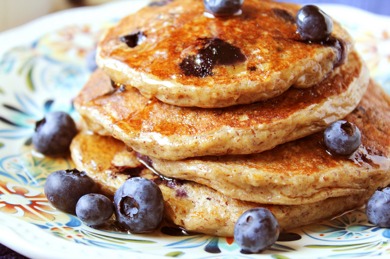

Oatmeal Cottage Cheese Pancakes

These family-friendly high-protein, low-fat, simple cottage cheese pancakes have a fluffy texture with a wholesome, subtly sweet flavor.
No one is more surprised than me at how legit these pancakes are! As someone who claimed for years not to like cottage cheese, these pancakes were the gateway that finally made me a believer. These are high-protein, low-fat pancakes with three simple ingredients that cook up fluffy and actually taste good. If it sounds too good to be true, I assure you it’s not.
The crisp edges, soft, tender center, and wholesome, subtly sweet flavor make them not just good, but go back for seconds and wake up 15 minutes early to make these on a weekday good. Enjoy them with a drizzle of maple syrup, switch it up with a dollop of jam, or go for another boost of protein with some Greek yogurt and fresh fruit.
Ingredients
Oatmeal Cottage Chesse Pancakes
- 1 egg
- 2 egg whites
- 2/3 cup cottage cheese
- 1 teaspoon cinnamon
- 1 tablespoon baking powder
- 1 teaspoon baking soda
- Coconut oil spray
Garnish
- Blueberries
- Organic raw honey
Instructions
Cottage Cheese Pancakes
- Beat eggs together in a bowl.
- In a separate bowl, add the dry ingredients - oat flour, cinnamon, baking soda and baking powder. Mix together.
- Then add cottage cheese and mix together using a spatula.
- Pour in the eggs and mix thoroughly.
- Spray a nonstick skillet with coconut oil and set the skillet on medium-high heat.
- When the skillet is hot, add 2 heaping tablespoons of the batter to the skillet for each pancake. Cook for about 1 - 2 minutes per side.